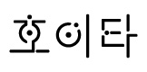

프로젝트 소개
프로젝트명
'호이타'란 화이팅하자는 의미로 사용한 명칭입니다.
1인 프로젝트팀으로써 다양한 생각을 가지고 실행하고자 합니다.
또한 늦더라도 확실하고 명확한 길로 가서 좋은 영향력을 이끌어 낼 것입니다.
1인 프로젝트팀으로써 다양한 생각을 가지고 실행하고자 합니다.
또한 늦더라도 확실하고 명확한 길로 가서 좋은 영향력을 이끌어 낼 것입니다.
프로젝트 로고 소개

원과 끝이 살짝 둥근 사각형을 사용하여 해당 프로젝트에서 디자인한 쓰레기통을 상형화합니다.
특히 중간마다 끊어지지만 다시 이어지는 형상은 쓰레기통의 존폐여부가 반복됨을 표현합니다.
원과 끝이 살짝 둥근 사각형을 사용하여 해당 프로젝트에서 디자인한 쓰레기통을 상형화합니다.
특히 중간마다 끊어지지만 다시 이어지는 형상은 쓰레기통의 존폐여부가 반복됨을 표현합니다.